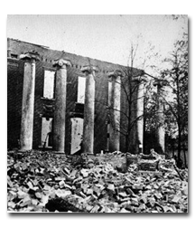

|  |
Search the Chambersburg ClaimsThis database contains information drawn from all 593 claims made by residents of Franklin County. You may search for specific individuals, or by race, gender, or amount awarded to develop a composite picture of the county's claimants.Browse a Selection of Chambersburg ClaimsThis list contains more extensive transcriptions of the claims applications made by Chambersburg residents. The information available here includes descriptions of the property destroyed during the 1864 burning. |